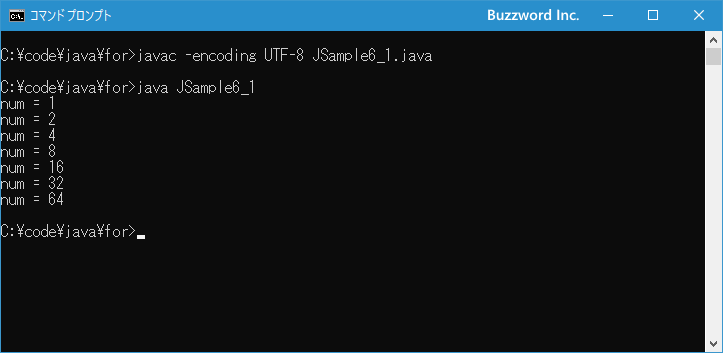

while文を使った繰り返し処理
Java で繰り返し処理を行う時に利用できる while 文の使い方について解説します。 while 文は繰り返し処理の中で条件を満たす場合は回数を決めずに繰り返しを行う場合によく使用されます。
while文の使い方
while 文は指定した条件式が真となる間は回数を決めずに処理を繰り返す時に使われます。書式は次のとおりです。
while (条件式){
// 繰り返しの中で実行される処理
...
}
繰り返し処理は条件式を評価して true だった場合には { から } のブロック内に記述された処理を上から順番に実行し、 false だった場合には繰り返し処理を終了し while 文の次へ処理を映します。
while 文の場合、最初の条件式が false となった場合には繰り返し処理が一回も行われません。
for 文とは異なり初期化式や変化式はありません。必要な変数は while 文の前で宣言などを行い、またブロックの中で条件式が変化するような処理を行ってください。繰り返し処理が終わることができず無限ループとなります。
次のサンプルをみてください。
int num = 1;
while (num < 5){
System.out.println("num = " + num);
num *= 2;
}
この場合、次のように処理が実行されています。
1)繰り返しの前段階で変数 num の宣言および初期値の代入を行います 2)条件式を評価 num < 5 は true なので繰り返しを実行 3)ブロック内の処理を実行(画面に変数 num の値を出力) 4)ブロック内の処理を実行(変数 num の値を 2 倍して 2) 5)繰り返しの1回目終了 6)条件式を評価 num < 5 は true なので繰り返しを実行 7)ブロック内の処理を実行(画面に変数 num の値を出力) 8)ブロック内の処理を実行(変数 num の値を 2 倍して 4) 9)繰り返しの2回目終了 10)条件式を評価 num < 5 は true なので繰り返しを実行 11)ブロック内の処理を実行(画面に変数 num の値を出力) 12)ブロック内の処理を実行(変数 num の値を 2 倍して 8) 13)繰り返しの3回目終了 14)条件式を評価 num < 5 は false なので繰り返しを終了
結果的に繰り返し処理は 3 回実行され、それぞれ num=1 と num=2 と num=4 を画面に出力します。
なお while 文の繰り返し処理で実行する処理が 1 つだけの場合は { と } を省略して次のように記述することもできます。
while (条件式) // 繰り返しの中で実行される処理
この場合は while 文の次の 1 行だけを繰り返し実行します。(ただ分かりにくいのでブロックは記述することをお勧めします)。
それでは簡単なサンプルプログラムを作って試してみます。テキストエディタで次のように記述したあと、 JSample6-1.java という名前で保存します。
class JSample6_1{
public static void main(String[] args){
int num = 1;
while (num < 100){
System.out.println("num = " + num);
num *= 2;
}
}
}
コンパイルを行います。
javac -encoding UTF-8 JSample6_1.java
その後で、次のように実行してください。
java JSample6_1

while 文の中で数値を 1 から初めて 2 倍していき 100 を超えたら終了しています。
while文で無限ループを行う
while 文で無限ループを行いたい場合には、条件式に boolean 型の true を記述してください。この場合は繰り返し処理のブロックの中で、何らかの条件を満たしたときに break 文などを使って繰り返し処理を抜ける必要があります。次のサンプルを見てください。
int num = 1;
while (true){
System.out.println("num = " + num);
num *= 2;
if (num > 10){
break;
}
}
繰り返し処理の中で変数 num の値を順に 2 倍していきますが、ある数値を超えたら break 文を使って while 文を抜けて次の処理へ移っています。( break 文を実行すると現在の繰り返し処理を強制的に終了します。詳しくは「break文の使い方」を参照してください)。
なお while 文では条件式を省略することはできません。省略した場合はコンパイルエラーとなります。
-- --
Java で繰り返し処理を行う時に利用できる while 文の使い方について解説しました。
( Written by Tatsuo Ikura )

著者 / TATSUO IKURA
初心者～中級者の方を対象としたプログラミング方法や開発環境の構築の解説を行うサイトの運営を行っています。